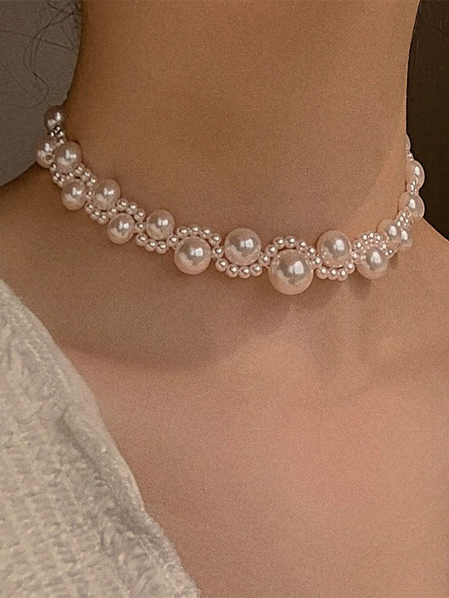
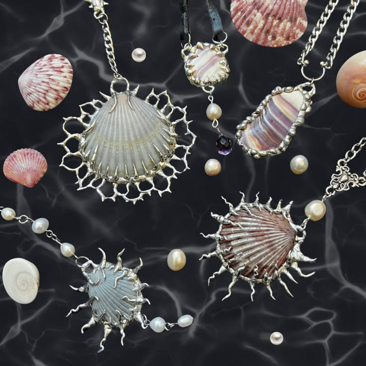
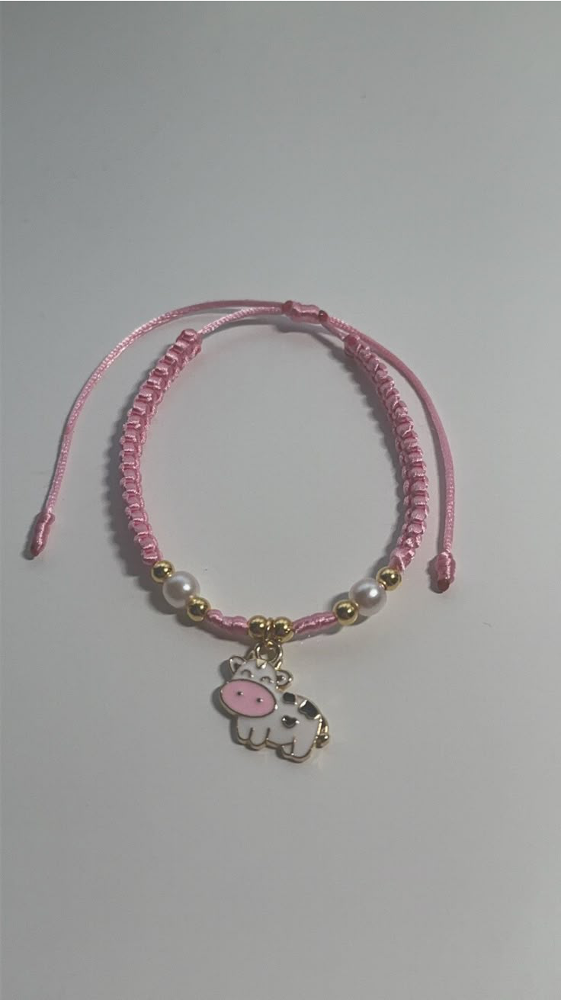
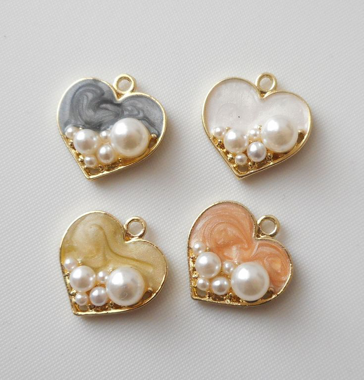

Jewelry
Top 10 Best jewelry making techniques
Author: Ladele Simi
12th July, 2025

Are you ready to dive into the sparkling world of jewelry making? Whether you're a seasoned artisan or just starting your crafting journey, mastering various jewelry making techniques can elevate your creations to stunning new heights! Here are the top 10 best jewelry making techniques that every aspiring jeweler should explore:

Wire Wrapping: This technique allows you to create beautiful designs using just wire and beads. It's perfect for adding flair to pendants and earrings!

Beading: A classic favorite, beading involves stringing together beads in various patterns and designs. The possibilities are endless!

Metal Stamping: Add a personal touch by stamping letters, symbols, or designs onto metal pieces. It’s a fantastic way to create custom jewelry.

Soldering: For those looking to work with metal, soldering is essential for joining pieces together seamlessly—perfect for rings and intricate designs.

Resin Casting: Create stunning pieces by embedding flowers, glitter, or even photographs in resin! This technique opens up a whole new world of creativity.

Polymer Clay Sculpting: Get playful with colors and shapes using polymer clay! You can mold it into unique forms that can be baked hard for durable pieces.

Stringing Techniques: Learn different methods of stringing beads together—like knotting or crimping—to add durability and style to your necklaces.

Chain Maille: This ancient technique involves linking metal rings together in intricate patterns, resulting in striking bracelets and necklaces that catch the eye!

Enameling: Add vibrant colors to your metalwork through enameling—a process where glass powder is fused onto metal surfaces through heat.

Casting: For those who want to replicate their designs perfectly, casting allows you to create multiple copies of a piece from a mold!
Each of these popular jewelry making techniques brings its own charm and creativity into the mix! So grab your tools and let’s start crafting some amazing jewelry that tells your unique story!
We'd love to hear your thoughts below